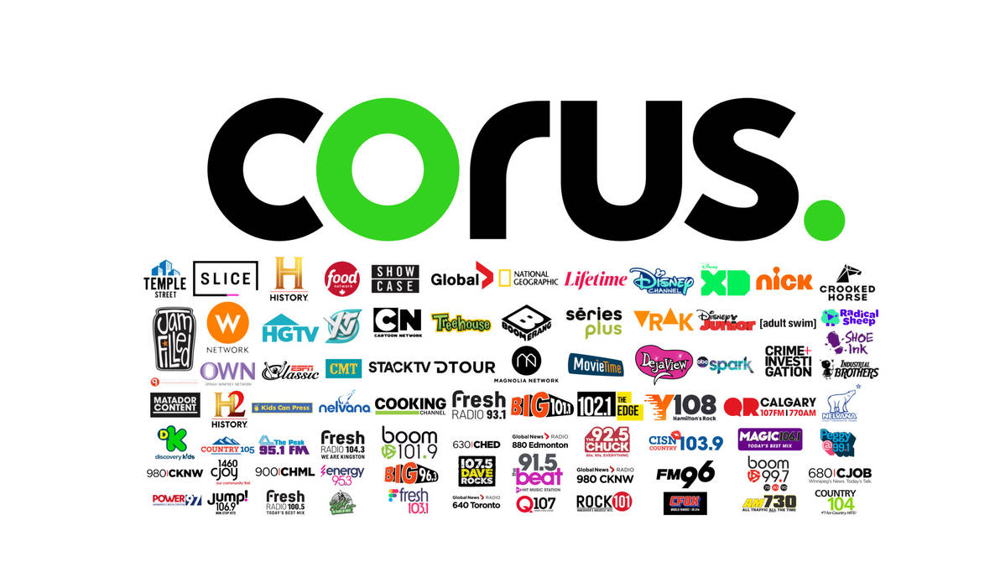

Remote Work Environments:
A statistical analysis of job satisfaction and retention in remote work settings using R.
View Project

Corus Entertainment:
A case analysis and strategic recommendation for the company Corus Entertainment.
View Project
Understanding Timeliness:
A exploratory analysis and visualization project regarding personal timeliness.
View Project